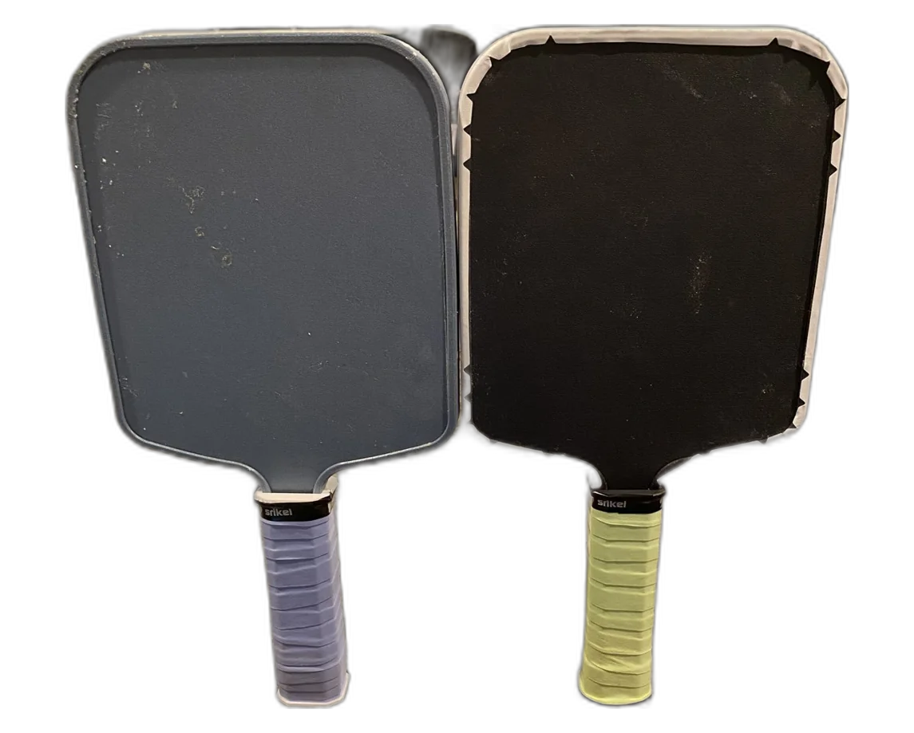

Eli Castenson
Eli Castenson
Finished: two paddles
3D printed pickleball paddle
A flexible TPU honeycomb core between two PETG plates, locked together by a keyed rim guard, a dovetail handle, and a heat-set insert.
- Size
- 14.2 × 6.9 in, 0.64 in thick
- Materials
- PETG, TPU, PETG-CF
- Material cost
- About $12 each
- Research
- CAD
- Broke
- Fixed
- Played

PETG PETG-CF